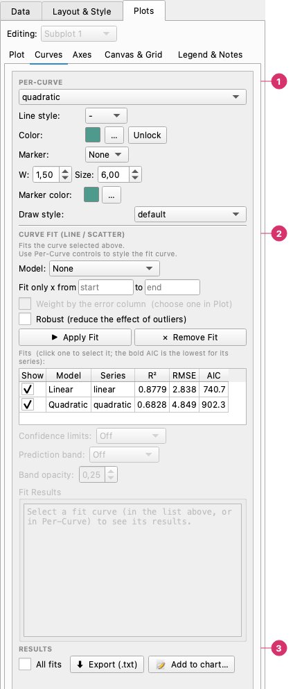
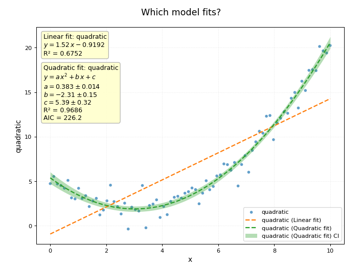

Curves and Fitting¶
The Curves page of the Plots tab controls the visual appearance of individual curves and provides curve fitting tools.
When the chart has more than one subplot, a Subplot selector at the top switches context. The curve selector below it lists all series assigned to the active subplot.
Per-curve style¶

The Plots → Curves page:
- Per-curve — Choose the curve, then its line style, colour (Unlock lets the palette change it again), marker, line width and marker size, marker colour and draw style.
- Curve fit (line / scatter) — The model and the options of the fit (range of x, weights, robust), Apply Fit and Remove Fit, the list of fits of the chart with their R², RMSE and AIC, the confidence and prediction bands, and the results box.
- Results — Export (.txt) writes the numbers to a file (with All fits for every fit), and Add to chart… writes a fit on the chart as a text box.
Select a series from the Curve dropdown to edit its style. Changes take effect on the live preview immediately.
Line¶
| Control | Description |
|---|---|
| Line style | Solid (-), dashed (--), dotted (:) , dash-dot (-.), or none |
| Line width | Stroke thickness in points |
| Color | Line color — click the swatch to open the color picker |
| Lock color | When checked, auto-palette assignment does not override the manually chosen color |
Marker¶
| Control | Description |
|---|---|
| Marker | Point shape: circle, square, triangle up/down/left/right, diamond, pentagon, hexagon, star, plus, cross, x, or None |
| Marker size | Point size in points |
| Marker color | Independent color for the marker fill (defaults to the line color) |
Color auto-assignment¶
When a palette is active (set in the Layout & Style tab), plotviz assigns the next palette color to each new series automatically. If Lock color is off, switching palettes reassigns all unlocked series colors to match the new palette. Lock a color to keep it fixed across palette changes.
Curve fitting¶
The curve fitting section lets you fit a mathematical model to any series and overlay the result on the chart.
(The Regression chart of the Seaborn Explorer draws a trend line to look at; it gives no equation, numbers or comparison, and is not stored in the chart. The two are compared there.)
Workflow¶
- Select the series to fit in the Per-Curve selector above. (If a fit curve is selected, the series it came from is fitted.)
- Choose a model from the Model dropdown.
- Click Apply Fit.
- The fitted curve appears on the chart and the equation and statistics are shown in the results box.
Available models¶
| Model | Equation | Typical use |
|---|---|---|
| Linear | y = a·x + b | |
| Quadratic | y = a·x² + b·x + c | |
| Cubic | y = a·x³ + b·x² + c·x + d | |
| Polynomial (degree n) | y = cn·xⁿ + … + c1·x + c0 | any degree from 1 to 10; choose the Degree below the list |
| Exponential | y = a·e^(b·x) | decay or growth towards 0 |
| Exponential + offset | y = a·e^(b·x) + c | charging or discharging (a capacitor, cooling): it settles at c instead of 0 |
| Power Law | y = a·x^b | needs x > 0 |
| Logarithmic | y = a·ln(x) + b | needs x > 0 |
| Sigmoid | y = a / (1 + e^(−(x − b)/c)) | rising or falling step |
| Gaussian | y = a·e^(−(x − μ)²/2σ²) + c | a peak (or, with a < 0, a dip) on a baseline: centre μ, width σ, height a |
| Sinusoid | y = a·sin(2π·f·x + φ) + c | a periodic signal: amplitude, frequency (cycles per x unit), phase |
| Custom expression | whatever you type | see below |
| Smoothing (LOWESS) | no equation | a smooth trend through noisy data, to see its shape; see below |
Fitted parameters are shown in the results box along with R², RMSE, and other statistics.
Custom expression¶
Type the formula in Custom expression, for example a*exp(-x/b) + c or a*x/(b+x):
xis the independent variable; every other letter or word is a parameter to fit. The results list them in the order they first appear.- You can use numbers,
+ - * / ** %, parentheses, the constantspiande, and the functionssin cos tan arcsin arccos arctan arctan2 sinh cosh tanh exp expm1 log log10 log2 log1p sqrt cbrt abs sign minimum maximum. Nothing else is accepted (no attributes, no other function calls, no conditions). - Start values (optional):
a=3, b=2, c=1. The search starts at 1 for the parameters you do not list (and also tries 0.1 and 10). Give them when the fit does not converge. - The F-test is not defined for custom models; use the AIC to compare.
Polynomials, the Gaussian, the sinusoid and the offset exponential find their own starting values from the data (the sinusoid from the spectrum, so a frequency is found without being given). A negative width or amplitude is reported in its usual form: σ > 0, a > 0 with the phase turned half a cycle.
What to fit¶
Below the model, three options decide which points count and how much:
- Fit only x from … to …: only the points in that stretch decide the fit, to leave out a transient or a zone without interest. Leave a box empty for no limit; write a date when x is a date. The curve is still drawn over all of x, and the results say how many points were left out.
- Weight by the error column: points with a larger error count less. It uses the Error column chosen in the Plot tab (so it is available only when one is chosen), read as the standard deviation of each y. The results show χ² and the reduced χ² (near 1 when the errors match the scatter), the parameter errors are absolute, and there is no F test. Points whose error is missing or not positive are left out.
- Robust (reduce the effect of outliers): points far from the curve count less, so a few wild values do not drag the fit, and the ones that stand out (more than 3 robust standard deviations from it) are counted as outliers in the results. R² and RMSE still include them, and the parameter errors are approximate.
Each combination is a fit of its own: its name carries what was chosen (Series 1 (Linear, x 2–…, robust fit)), so you can fit a series with and without an option and compare them in the Fits list. The prediction band uses the scatter of the points that were fitted.
Smoothing (LOWESS)¶
LOWESS draws a smooth trend through the data by fitting a short line around each point, using the share of points set by Span (0.05 to 1; small follows the data closely, large is smoother). It is for seeing a trend without choosing a model: it has no equation, parameters, bands or tests, and it is not drawn outside the range of the data. It is saved with the chart and shows in the Fits list with its R² and RMSE.
How the data are handled¶
- Missing values. Points where x or y is NaN are ignored, and the results say how many.
- Starting values for the Exponential, Power Law and Sigmoid models come from the data (for example the Exponential starts from a straight-line fit of ln y), so they work for any amplitude and x range, for decreasing sigmoids, and for negative data.
- x far from zero (years, or a date column, which is a number of days since 1970): the fit is done on
x − x₀, where x₀ is about the centre of the data, becausee^(b·19800)overflows and polynomials in such x are badly conditioned. The equation then shows(x − x₀)and the results box gives x₀. The curve and the bands are still drawn against the real x. - Logarithmic and Power Law need every x to be greater than 0; if not, the fit reports it instead of returning a meaningless curve.
- A fit that does not converge is reported with a message, never drawn as a curve with a nonsense R².
- The fit curve and its bands are drawn from left to right even when the data are not sorted by x.
Several fits of the same series¶
You can apply as many models as you like to a series, to compare them. Every fit is kept, with its own parameters, statistics, bands and style, and all of them are saved in the .pviz file.
The Fits list under the buttons shows them side by side:
| Column | Meaning |
|---|---|
| Show | Untick to hide the fit and its bands from the chart (and from the exported script) without deleting it |
| Model, Series | What was fitted to what |
| R², RMSE, AIC | The numbers to compare by. The bold AIC is the lowest among the fits of that series: a better fit relative to its number of parameters. A higher-order model always has a higher R², so look at the AIC before choosing it |
Click a row to select that fit: the confidence limits, the prediction band, the style controls and the results below then act on it. Selecting a fit curve in the Per-Curve list does the same.
- Each new fit takes a colour that the series and its other fits do not use, so they can be told apart.
- Applying the same model to the same series again replaces the previous one, and the results say so.
- Remove Fit removes the selected fit only. With the data series selected it removes all its fits, after asking.
- The results box shows the selected fit; it never shows another one instead.
Fit curve style¶
The appearance of the fitted curve is set independently from the data series:
| Control | Description |
|---|---|
| Color | Color of the fit line |
| Line style | Solid, dashed, dotted, etc. |
| Line width | Stroke thickness |
Confidence and prediction bands¶
| Control | Description |
|---|---|
| Confidence limits | Shaded region around the fit: Off, 1σ (68%), 2σ (95%) or 3σ (99.7%) |
| Prediction band | Shaded region where new observations are expected to fall: Off, 1σ, 2σ or 3σ |
| Band opacity | Opacity of the shaded bands (0.05–1.0; 0.35 by default, the prediction band is drawn at half of it) |
The bands belong to the fit curve and are drawn whatever line type you give that curve, and they follow it if you rename it. If the data lie exactly on the curve (for example data made by the function generator, with no noise) the bands have no width and cannot be seen; the results box says so.
When a fit curve is selected and you click Apply Fit with another model, the new model is fitted to the data the curve came from, not to the curve (a curve fitted to its own fit would fit perfectly and have bands of no width).
The percentages hold for few points too: the bands use the Student-t quantile for the degrees of freedom of the fit, which for many points is the same as 1, 2 or 3 normal standard deviations.
The confidence band is tighter (it bounds the mean prediction); the prediction band is wider (it bounds individual future observations).
Fit results¶
The results box at the bottom of the section shows:
- Model equation with fitted parameter values
- Goodness of fit: n, parameters, degrees of freedom, R², adjusted R², RMSE, MSE, SSE, SST, AIC and BIC (from the Gaussian log-likelihood, as in statsmodels)
- F-statistic and its p-value, for the models that contain an intercept-only model (Linear, Quadratic, Cubic, Logarithmic); the Exponential, Power Law and Sigmoid have no such test and show
— - For each parameter: value, standard error, t, p and the confidence interval
The fit result is saved with the .pviz project file and restored on reload.
Putting a fit on the chart¶
📝 Add to chart…, in the Results row, next to Export (.txt), writes the fit on the chart as a text box, so that the equation and the numbers travel with the picture. It asks what to show:
| Option | Adds |
|---|---|
| Title | Quadratic fit: series, with the x range, weighted or robust when they were used |
| Equation | The equation with the fitted numbers (y = 0.383 x² − 2.31 x + 5.39). With Parameters ticked it is written with their names (y = a x² + b x + c) and the numbers follow below |
| Write the equation as math text | On by default: the equation is written in LaTeX between dollar signs ($y = 0.383\,x^{2} - 2.31\,x + 5.39$) and drawn by matplotlib as a typeset formula, with powers, fractions, e^{…}, Greek letters and so on. Switch it off for plain characters. You can copy the text from the annotation into a paper |
| Parameters, with their errors | One line per parameter: a = 0.383 ± 0.014. The error has two significant digits and the value the same decimals |
| R², RMSE, AIC | The goodness of fit |
| Number of points | n = 80 |
By default it shows the title, the equation and R², for the fit that is selected in the Fits list. Tick All fits (the box of the Results row, the same one that Export (.txt) uses) to label every fit of the chart; the labels are stacked under each other at the top left of their subplot. With no fit selected and All fits off, you are asked to select one.

The label is an ordinary text annotation: drag it where you want it, double-click it to edit the text, delete it from the annotations list. It is saved with the chart and appears in the exported image and in the exported Python script. Two things to know:
- The text is fixed. If you fit again (another range, other data), the label does not change: delete it and make it again.
- A shifted x is shown. When x is far from zero (years, dates) the fit is made on
x − x₀for accuracy, and the label then writes(x − x₀)and adds a linex₀ = 2005. A LOWESS fit has no equation: its label has the title, no equation and R².
Exporting the results¶
In the Results row at the bottom of the page, ⬇ Export (.txt) writes the results to a text file, with the All fits box beside it deciding what goes in:
| All fits off (the default) | All fits on | |
|---|---|---|
| What is written | The fit that is selected in the Fits list | Every fit of the chart, one after the other |
| Suggested file name | <name of the fit>_results.txt |
all_fits_results.txt |
| Header | The block of that fit | CURVE FIT RESULTS — N fit(s), then the blocks separated by a line |
| If there is nothing to write | Select a fit curve first, or tick "All fits". | No fitted curves found. |
The file is plain text (no LaTeX). For each fit it has the equation, the goodness of fit (R², RMSE, AIC, BIC and the F-statistic with its p-value when it exists) and, for each parameter, its value with the error, t, p and the confidence interval. After the last fit comes a short glossary of the models that appeared. The level of the intervals is the one chosen in Confidence limits.
To compare models, tick All fits and export once: the line and the parabola of the worked example end up side by side in one file instead of two. The button is available once the chart has at least one fit.